| response | frequency | relative_frequency |
|---|---|---|
| Back pain | 9 | 0.3000000 |
| Fatigue | 9 | 0.3000000 |
| Headache | 8 | 0.2666667 |
| Nausea | 4 | 0.1333333 |
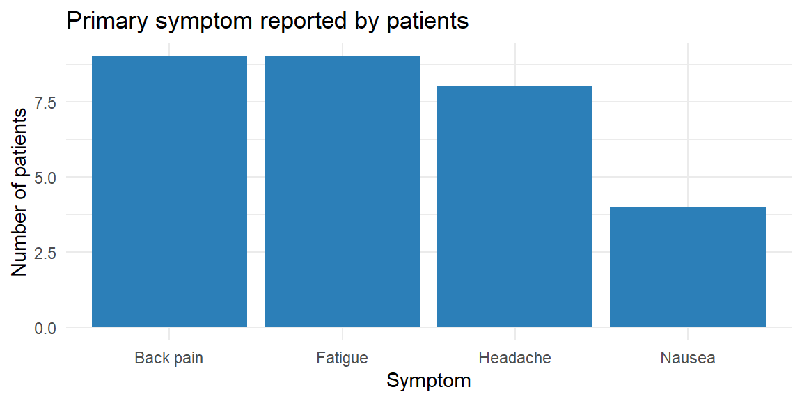
“The greatest value of a picture is when it forces us to notice what we never expected to see.” – John Tukey
When you collect data that fall into groups—like preferred streaming service, political affiliation, or type of pet—the first step is to count how many observations fall into each category. Those counts form the backbone of both tables and graphs for categorical data. In this section we’ll learn how to build simple frequency tables, translate them into proportions or percentages, and organize two categorical variables together in a two‑way table. Along the way we’ll see when different visual summaries make sense and preview bar and pie charts (covered in detail in Section 3.2).
A frequency table is a basic but powerful tool for summarizing a categorical variable. It lists each distinct category and records how many observations fall into that category. By organizing raw data into counts, a frequency table provides an immediate snapshot of how the data are distributed across categories, making patterns and imbalances easy to see.
A typical frequency table has two columns: one for the category labels and one for their frequencies (counts). Constructing a frequency table involves identifying all possible categories and tallying the number of observations in each. This process is often the first step in data analysis because it reduces a potentially large and messy dataset into a clear and interpretable summary.
While frequency tables report absolute counts, these counts can be misleading when sample sizes differ. For example, a category with 50 observations may seem large, but its importance depends on whether the total sample size is 100 or 1,000. To address this, we often compute relative frequencies.
A relative frequency expresses the count for each category as a proportion of the total number of observations. When a column of relative frequencies—or percentages—is added to a frequency table, the result is called a relative frequency table. Relative frequencies are calculated by dividing each category’s count by the total sample size. Because they represent proportions of the whole, relative frequencies always sum to 1 (or 100% when expressed as percentages).
Relative frequency tables are especially useful for comparing distributions across different samples or populations. By focusing on proportions rather than raw counts, they allow meaningful comparisons even when the underlying sample sizes are not the same. For this reason, relative frequencies are commonly used in reports, visualizations, and summaries intended for broad audiences.
In practice, frequency and relative frequency tables often serve as the foundation for graphical displays such as bar charts and pie charts, providing a clear numerical summary that complements visual representations of categorical data.
Imagine you survey 30 patients at a local clinic about the primary symptom that brought them in. You record four categories: “Headache,” “Back pain,” “Fatigue,” and “Nausea.” We can organize the responses in a simple table of counts and proportions. Below we simulate such a survey and display the results.
| response | frequency | relative_frequency |
|---|---|---|
| Back pain | 9 | 0.3000000 |
| Fatigue | 9 | 0.3000000 |
| Headache | 8 | 0.2666667 |
| Nausea | 4 | 0.1333333 |
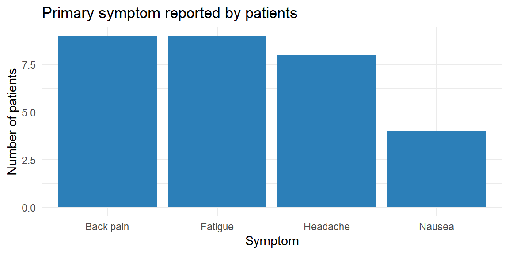
The table lists the four categories in alphabetical order with their counts and relative frequencies. For instance, if 8 of the 30 patients reported “Headache,” the relative frequency of “Headache” is \(8/30 \approx 0.27\). The accompanying bar chart gives a visual sense of the same information: each bar’s height corresponds to a category’s frequency, and the bars are separated to emphasize that the categories have no inherent order. In practice you might reorder the bars to make the graph easier to read—perhaps putting the largest category first.
Sometimes you want to highlight the few categories that account for most of the observations. A Pareto chart is a bar chart arranged in descending order of frequency and often paired with a cumulative percentage line. It helps you identify the “vital few and trivial many” in quality control and business applications. Pareto charts are useful when there are many categories and you want to focus attention on the most common causes or responses.
In JMP you can create a frequency table by selecting Analyze → Distribution, assigning your categorical variable to the X role, and examining the resulting counts. To add relative frequencies, use the red triangle menu (▸) to choose Display Options → Show Percent. JMP’s Graph Builder will automatically construct a bar chart when you drag a categorical variable to the X‑axis and the count statistic to the Y‑axis.
When data include two categorical variables, a natural question is whether—and how—those variables are related. A two-way table, also called a contingency table, provides a clear way to summarize and explore this relationship. Rather than listing categories separately, a contingency table displays the counts for every combination of categories across the two variables.
In a contingency table, one categorical variable defines the rows and the other defines the columns. Each cell in the table shows how many observations fall into the corresponding pair of categories. The table also often includes row totals, column totals, and a grand total, which help place the individual cell counts in context.
Contingency tables are especially useful for examining associations between variables. By comparing counts or proportions across rows or columns, you can look for patterns such as whether certain categories tend to occur together more often than would be expected by chance. For example, you might ask whether voting preference differs by age group, or whether product satisfaction varies by subscription type.
To aid interpretation, contingency tables are often converted to conditional distributions by computing row or column percentages. Row percentages answer questions like “Given this row category, how are observations distributed across the columns?” Column percentages reverse the conditioning. Choosing which percentages to compute depends on the research question and which variable is considered explanatory versus response.
Contingency tables form the foundation for formal statistical analysis of categorical data. In later chapters, these tables will provide the structure for chi-square tests of independence, which assess whether the observed association between two categorical variables is stronger than would be expected from random variation alone. Even before formal testing, however, contingency tables offer a powerful descriptive tool for uncovering relationships in categorical data.
Suppose we collect data on the same symptom question but also record each patient’s age group: “Under 30,” “30–50,” or “Over 50.” We can summarize the joint distribution in a two‑way table.
| age_group | Back pain | Fatigue | Headache | Nausea |
|---|---|---|---|---|
| 30–50 | 3 | 4 | 5 | 3 |
| Over 50 | 2 | 3 | 1 | 0 |
| Under 30 | 4 | 2 | 2 | 1 |
Each cell in the table shows the number of patients who fall into the corresponding combination of age group and symptom. We can also compute row or column relative frequencies to see percentages within each group; for example, dividing each row by its total gives the distribution of symptoms within each age group. Contingency tables allow us to see whether symptom patterns differ across age groups and serve as input for clustered or stacked bar charts (discussed in Section 3.2).
Because categorical variables can have different numbers of levels and sample sizes can vary, relative frequencies are essential for fair comparisons. Reporting only counts can be misleading: 20 supporters of a movie genre in a survey of 50 people represent a large fraction, while 20 supporters in a survey of 500 people represent a much smaller fraction. Percentages standardize the scale.
When displaying percentages, make sure they add to 100%. In a pie chart (a circular graph we’ll describe in the next section), each slice represents a category’s percentage of the whole. Pie charts are useful for showing how the total is divided among categories, but they become cluttered with too many slices. Bar charts are more flexible: you can reorder the bars, show counts or percentages, and compare multiple groups using side‑by‑side or stacked bars.
In JMP, tables and graphs for categorical variables are straightforward:
| Keyword | Definition |
|---|---|
| Frequency table | A table that lists each category of a variable and the number of observations in that category. |
| Relative frequency | The proportion or percentage of observations in a category, equal to the category’s count divided by the total count. |
| Relative frequency table | A frequency table with an additional column showing the relative frequency of each category. |
| Two‑way (contingency) table | A table that displays the counts for each combination of levels of two categorical variable. |
In a survey of 80 households, 32 own a dog, 20 own a cat, 12 own both, and the remainder own no pets. Construct a frequency table that shows the number and percentage of households in each pet ownership category (Dog only, Cat only, Both, None). Which visualization—a bar chart or a pie chart—would you choose, and why?
Explain the difference between a frequency table and a relative frequency table. In what situations is it more informative to look at relative frequencies rather than absolute frequencies?
What is a two‑way (contingency) table? Describe a scenario where a two‑way table could help you explore the relationship between two categorical variables.
Bar charts have spaces between bars and can be drawn in any order. Why are these design choices appropriate for categorical variables? What might go wrong if you drew the bars touching or forced them into a numerical order?
Pet ownership table. The four categories and their counts are: Dog only (20), Cat only (8), Both (12), None (40). The total number of households is 80. The relative frequencies are 25% dog only, 10% cat only, 15% both, and 50% none. A bar chart would be preferable here because it allows you to order the bars from most to least common and makes it easy to compare magnitudes. A pie chart could work for four categories, but it becomes harder to read when slices are similar in size or when there are many categories.
Frequency vs. relative frequency. A frequency table reports the counts of observations in each category. A relative frequency table adds a column showing the proportion or percentage of observations in each category. Relative frequencies are more informative when comparing groups of different sizes or when you want to focus on the distribution rather than the sample size—for example, comparing survey results from two classes of different sizes.
Contingency table example. A two‑way table displays counts for each combination of levels of two categorical variable. For instance, you could record whether each patient in a clinic has insurance (Yes/No) and whether they arrived on time (On time/Late). A contingency table would show how many patients fall into each combination (e.g., insured & on time, insured & late, uninsured & on time, uninsured & late), helping you explore whether punctuality differs by insurance status.
Design choices. Categories have no intrinsic numeric order, so bars in a bar chart can be arranged in any order without misrepresenting the data. Leaving space between bars reinforces that the categories are distinct and unordered. If you drew the bars touching, it might suggest a continuous scale (like a histogram), which could confuse readers. Forcing categories into a numerical order might imply ranking where none exists.
“Normally if given a choice between doing something and nothing, I’d choose to do nothing. But I would do something if it helps someone do nothing. I’d work all night if it meant nothing got done.” – Ron Swanson
When you’ve tallied the counts of a categorical variable, your next job is to turn those numbers into a picture. Two of the simplest pictures—bar charts and pie charts—seem deceptively alike: each shows categories and their sizes. But as we’ll see, they serve different purposes and come with different design rules.
As we have already seen in Section 3.1, a bar chart is one of the most common and effective ways to visualize categorical data. It displays distinct categories along one axis and represents a numerical value for each category—such as a count, proportion, or percentage—using the length of a bar along the other axis. Bar charts can be drawn with bars oriented vertically (often called column charts) or horizontally, depending on which layout best supports readability.
A defining feature of bar charts is that the bars are separated by gaps. These gaps signal that the categories are discrete and unordered, distinguishing bar charts from histograms, which display continuous data with adjacent bins. The axis along which the bars extend typically starts at zero, ensuring that bar lengths accurately reflect the magnitudes being compared.
Bar charts are especially effective because humans are very good at comparing lengths that share a common baseline. This makes it easy to see which categories are larger or smaller, to compare differences across groups, and to identify patterns or outliers at a glance. For this reason, bar charts are a natural choice for summarizing frequency tables, relative frequency tables, and summary statistics across categories.
Bar charts are also flexible. They can be used to display raw counts, percentages, averages, or other summary measures, as long as the underlying variable is categorical. When categories have long labels or there are many of them, horizontal bar charts often improve readability. In more advanced settings, grouped or stacked bar charts can be used to compare categories across additional variables.
Because of their clarity and versatility, bar charts are often the first visualization used to explore categorical data and to communicate results to a broad audience.
Suppose a hospital records the blood type (A, B, AB or O) of 200 randomly chosen donors. The counts are shown in the table below along with a bar chart. Notice that the bars are separated and can be reordered to make patterns easy to see.
| type | count | prop |
|---|---|---|
| A | 66 | 0.330 |
| AB | 9 | 0.045 |
| B | 31 | 0.155 |
| O | 94 | 0.470 |
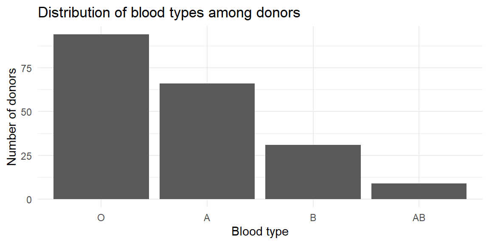
The vertical bar chart emphasizes how common type O is relative to the others. You could flip the axes to make a horizontal bar chart if your category names are long or if you prefer to read labels on the y‑axis.
Bar charts are powerful because they encode values using length, which humans perceive accurately when bars share a common baseline. Poor design choices can undermine that strength and unintentionally (or intentionally) mislead the reader. The following guidelines help ensure that bar charts communicate information honestly and clearly.
Because bar charts represent magnitude through bar length, the axis should almost always start at zero. Truncating the axis exaggerates differences by making small changes appear visually dramatic. While truncated axes are sometimes acceptable for line charts, they are almost always misleading for bar charts.
What goes wrong if you don’t: Two categories with similar values may appear drastically different, leading readers to overestimate the importance of the difference.
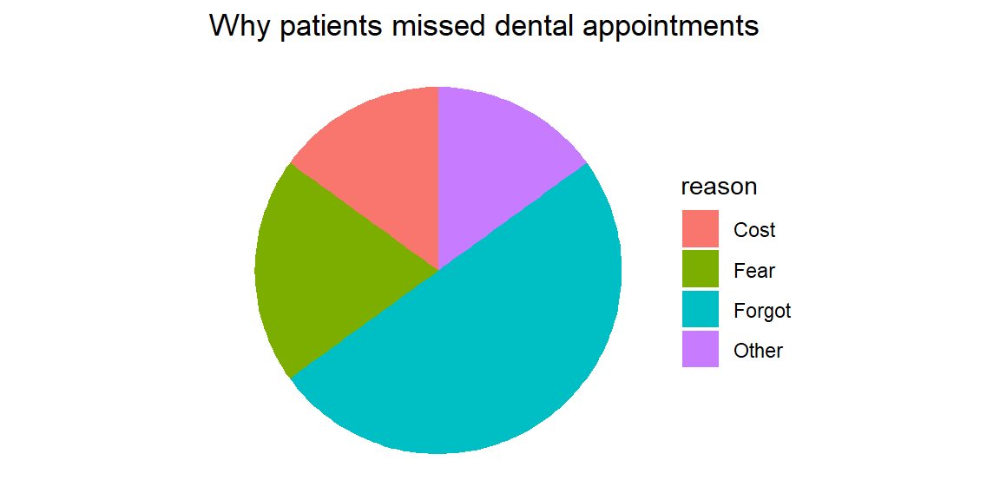
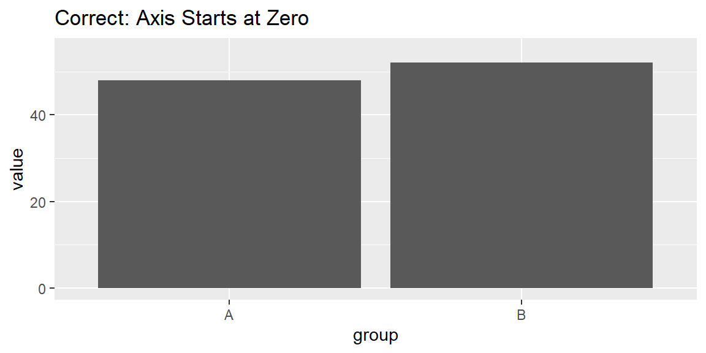
Bars should be evenly spaced, with visible gaps between them. The gaps reinforce that categories are discrete, not continuous, and help the eye separate groups cleanly.
What goes wrong if you don’t: Inconsistent or missing gaps can make bars blend together, confusing the chart with a histogram or suggesting unintended relationships.
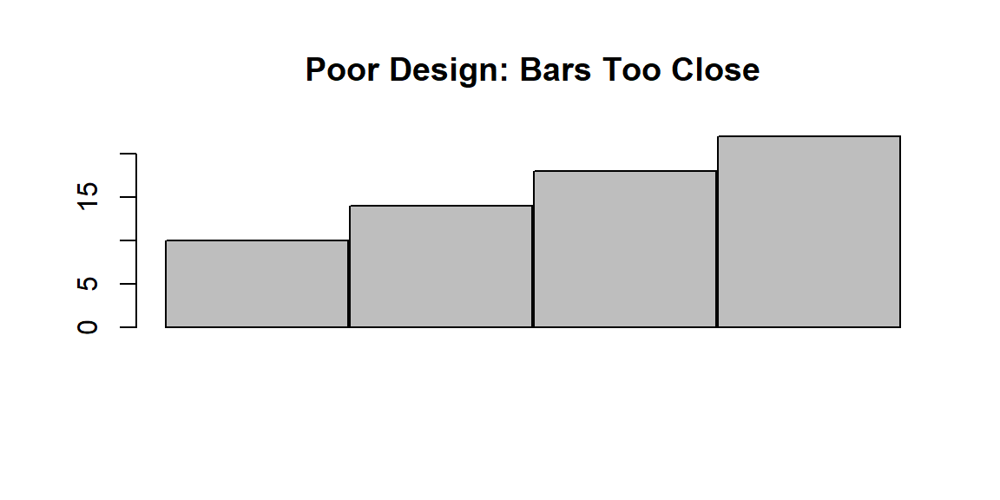
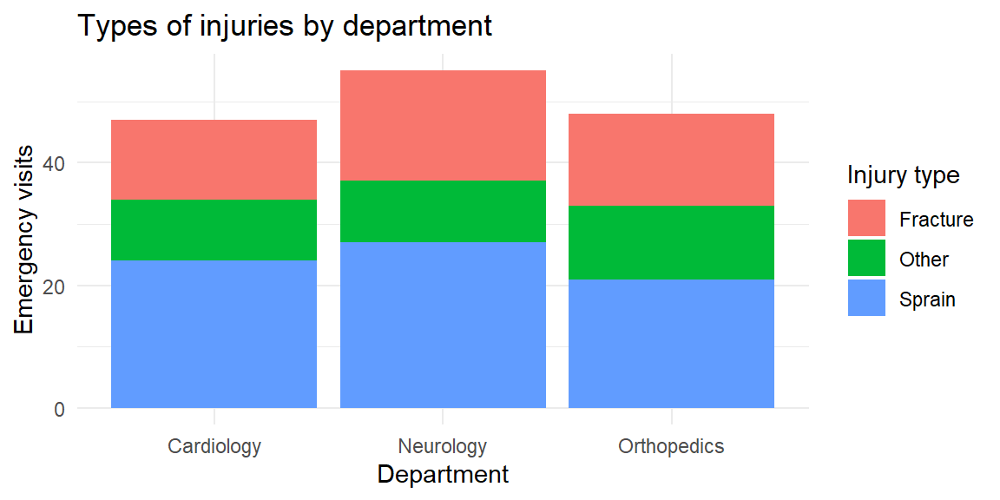
The order of bars should help the reader understand the data. Common choices include alphabetical order, chronological order, or ordering by value. A deliberate ordering allows patterns and comparisons to emerge naturally.
What goes wrong if you don’t: Random or arbitrary ordering forces the reader to work harder and can hide meaningful trends.
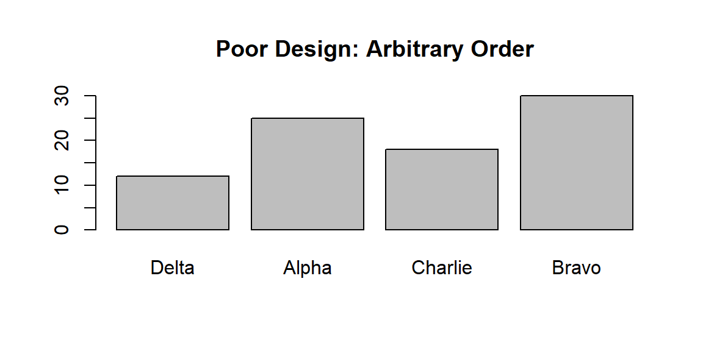
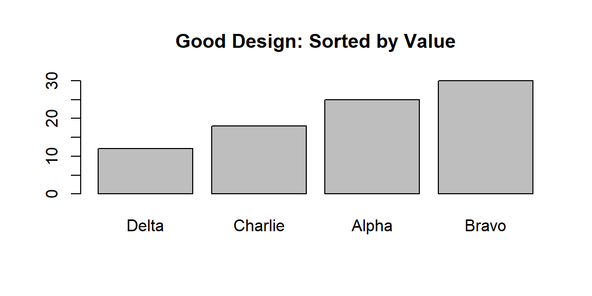
Decorative elements—such as 3-D bars, shadows, gradients, icons, or excessive labels—do not add information. Instead, they distort perception, make values harder to compare, and distract from the data itself.
What goes wrong if you don’t: 3-D effects change apparent bar lengths depending on viewing angle, and visual clutter overwhelms the message.
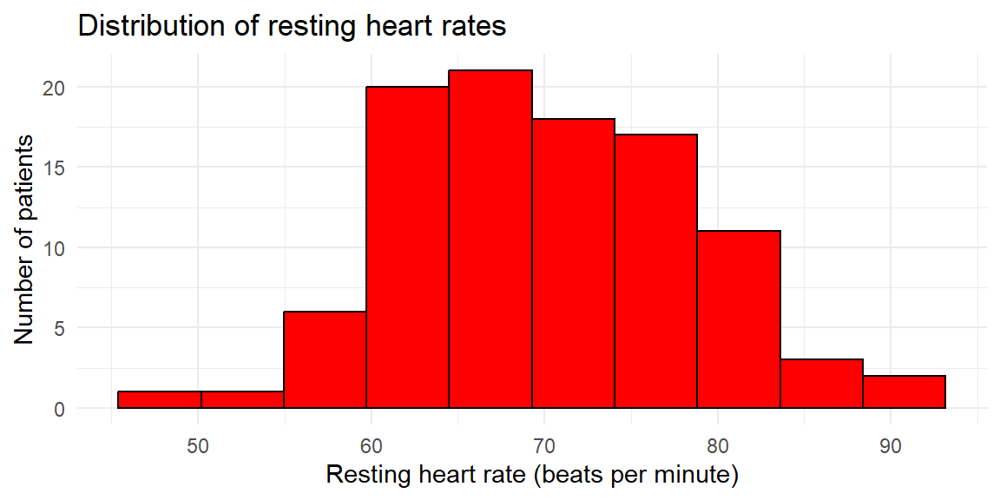
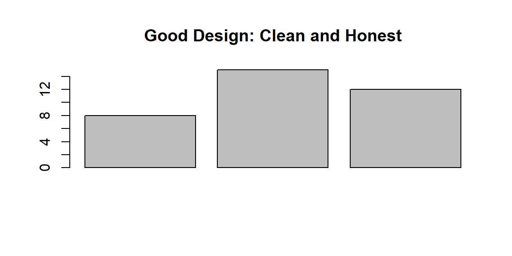
Each of these principles protects the integrity of the visual message. Bar charts are most effective when they are simple, proportional, and transparent. Violating these guidelines can exaggerate differences, obscure patterns, or mislead readers—sometimes unintentionally, sometimes not.
Following these design tips ensures that your bar charts support accurate interpretation and reinforce, rather than undermine, the credibility of your analysis.
A pie chart is a graphical display used to show how a whole is divided into parts. The entire circle represents the total—typically 100% of the observations—and each slice corresponds to a category within a categorical variable. The size of each slice is proportional to the category’s share of the total, with larger proportions occupying larger angles and areas of the circle.
Pie charts are widely recognized and easy to interpret at a glance. Their circular shape immediately signals a “part-of-a-whole” relationship, making them intuitive for audiences without formal statistical training. For this reason, pie charts are often used in presentations, reports, and media when the goal is to convey how a total is allocated across a small number of categories.
However, pie charts have important limitations. Human perception is better at comparing lengths along a common baseline than comparing angles or areas. As a result, it can be difficult to judge small differences between slices, especially when categories have similar proportions or when the chart contains many slices. Labels can also become crowded as the number of categories increases.
Because of these limitations, pie charts work best when:
In situations where accurate comparison across categories is important, a bar chart often provides a clearer and more informative alternative. Nonetheless, when used sparingly and appropriately, pie charts can be an effective way to communicate simple part-whole relationships.
A dental clinic tracks why patients miss scheduled cleanings. Out of 100 missed appointments, 50 were due to forgetfulness, 20 to fear, 15 to cost, and 15 to other reasons. A pie chart makes the share of each reason obvious.
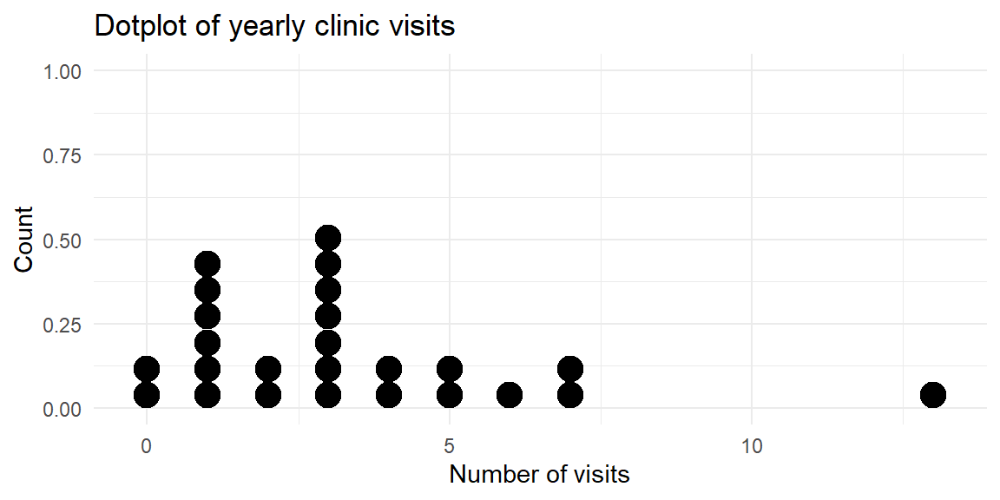
The slices emphasize that half of the missed appointments were simply forgotten. However, imagine adding three more reasons of similar size. The slices would become crowded and hard to compare. Pie charts work only when the categories sum to a meaningful whole and there are no more than a few slices.
Although the same categorical data can often be displayed using either a bar chart or a pie chart, the two serve different analytical purposes and are not interchangeable. Choosing the right chart depends on what you want the reader to notice and compare.
Compare values across categories or between groups. Bar charts place values along a common baseline, making differences in magnitude easy to see. This is especially important when categories have similar values or when precise comparisons matter, such as comparing approval ratings across departments or test scores across teaching methods.
Display statistics that do not form a meaningful whole. Many summary statistics—such as averages, medians, rates, or scores—do not add up to 100% and therefore do not represent parts of a single total. A pie chart would be inappropriate in these cases, while a bar chart can display these values clearly and honestly.
Show many categories, even if some are small. Bar charts remain readable with a large number of categories, particularly when sorted or displayed horizontally. Small values can still be compared accurately, whereas tiny pie slices are difficult to see and label.
Because bar charts rely on length comparisons, they align well with how people naturally judge quantity, making them the default choice for most categorical comparisons.
The values represent parts of a whole that add up to 100%. Pie charts are specifically designed to show how a total is divided among categories. If the data do not represent proportions of a single whole, a pie chart is misleading.
The number of categories is small. Pie charts work best with a limited number of slices—ideally no more than four or five. Too many slices make the chart cluttered and difficult to interpret.
The goal is to communicate the overall composition, not precise differences. Pie charts are effective for conveying the big picture—such as showing that one category dominates the total—rather than for comparing closely sized categories.
If you find yourself squinting at a pie chart to decide which slice is larger, that’s a sign the chart is doing too much. In those cases, switch to a bar chart. Because humans are far better at judging lengths than angles or areas, bar charts almost always provide clearer and more accurate comparisons.
In practice, bar charts should be your default choice, with pie charts reserved for simple, high-level part-of-a-whole messages.
Sometimes you have two categorical variables and want to see how their categories interact. We introduced two‑way tables in Section 3.1; here’s how to graph them.
A clustered (side‑by‑side) bar chart groups bars for each level of a second variable next to each other so you can compare across groups. For example, imagine you survey 120 patients about how satisfied they were with a new physical therapy program (satisfied, neutral, dissatisfied) and record whether they were in the treatment or control group. A clustered bar chart shows differences in satisfaction between the two groups.

In a stacked bar chart, bars for each category are stacked atop one another. This emphasizes the total size of each category but makes it harder to compare the segments across stacks. You might use a stacked chart to show how types of injuries (sprain, fracture, other) contribute to emergency visits across departments; if you convert each bar to 100% of its height, you get a 100% stacked bar chart that highlights composition within each group.

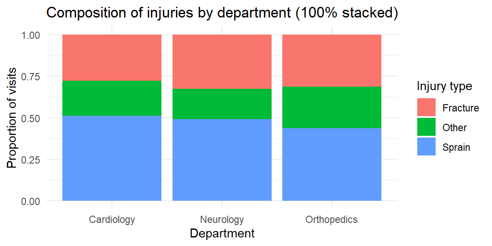
Stacked bars are useful when you care about the total across categories, but they hide patterns in the middle segments. In the last plot, you can easily compare the overall emergency visits across departments and the share of fractures, but it’s harder to compare the “other” injuries across departments because their segments float at different heights. If your goal is to compare subgroups, a clustered bar chart is usually better.
In JMP, bar and pie charts live in the Graph Builder. Drag your categorical variable to the X‑axis and drop the N or % statistic onto the Y‑axis to create a bar chart. To cluster by a second categorical variable, drop it in the Group or Overlay zone, and choose Bar (Horizontal) or Bar (Vertical) from the chart palette. To stack, use the Stack option in the legend. To make a pie chart, drag the categorical variable to a blank canvas and choose Pie; JMP will automatically convert counts to percentages and label the slices. Use the red triangle (▸) menu to display data labels, reorder slices, or combine small categories into an “Other” slice.
| Keyword/Concept | Definition or note |
|---|---|
| Bar chart | Graph that displays categories along one axis and uses the length of bars to represent numeric values; great for comparing counts or percentages across categories. |
| Pie chart | Circular chart in which slices represent how a total is divided among categories; appropriate only when values sum to a meaningful whole and the number of categories is small. |
| Clustered (side‑by‑side) bar chart | Bar chart where categories are grouped side by side for levels of a second variable; useful for comparing groups across categories. |
| Stacked bar chart | Bar chart where bars for each subgroup are stacked; shows composition and totals but makes it harder to compare individual segments. |
A clinical trial reports the average pain score (on a 0–10 scale) for three physical therapy programs. Should you use a bar chart or a pie chart? Explain your reasoning.
A nutritionist surveys 500 patients about their preferred breakfast type: cereal, fruit, eggs, or none. The counts are 150, 120, 80, and 150. Sketch how you would display this information with a pie chart. When might a bar chart be preferable?
In a mental health study, participants are classified into stress levels (low, moderate, high) and whether they attended counseling (Yes/No). Which type of bar chart would you use to compare stress levels between counseling and non‑counseling participants? What pattern would indicate that counseling is associated with lower stress?
A bar chart shows the average number of cavities per patient in three dental clinics: 1.2, 1.3 and 1.4 cavities. The y‑axis starts at 1.0. Explain why this design might mislead and how to fix it.
Give two reasons why pie charts often make it harder to compare categories than bar charts.
You should use a bar chart because the numbers represent average pain scores and do not sum to a meaningful whole. Pie charts imply a part‑to‑whole relationship and would be misleading here.
The four breakfast types form parts of the whole sample (500 patients). In a pie chart, the slices would be 30% cereal, 24% fruit, 16% eggs, and 30% none. However, a bar chart may be preferable because it allows you to order the categories from most to least common and makes it easier to compare the cereal and none categories, which are equal in size.
A clustered (side‑by‑side) bar chart would let you compare the counts (or proportions) of low, moderate, and high stress within the counseling and non‑counseling groups. If counseling is associated with lower stress, you would expect the “low” bar to be taller (or the “high” bar shorter) in the counseling group than in the non‑counseling group.
Starting the y‑axis at 1.0 truncates the bars and exaggerates small difference. To avoid misleading readers, start the axis at zero. Alternatively, use a dot plot or annotate the differences directly if the differences are small but meaningful.
First, people judge lengths more accurately than angles; in a pie chart it is hard to gauge the exact size of a slice. Second, when slices are similar in size or there are many categories, comparing slices becomes difficult and the chart becomes cluttered. Bar charts avoid these issues by using a common baseline and allowing many bars.
“It’s not what you look at that matters, it’s what you see.” - Henry David Thoreau
Categorical variables describe membership in distinct groups, but quantitative variables operate on an entirely different scale. Measurements such as height, blood pressure, cholesterol level, income, or reaction time can take on a wide range of numerical values along a continuum. When presented as a raw list, these numbers are often difficult to interpret on their own.
To extract meaning from quantitative data, we must organize and summarize it in a systematic way. One of the most effective approaches is to group numerical values into intervals and display the results in tables. These tables provide a structured summary of the data and serve as the foundation for graphical displays such as histograms, stem-and-leaf plots, and dotplots.
Well-constructed tables help reveal key features of a distribution. They show where values tend to cluster, how widely the data are spread, and how observations accumulate across the range of possible values. By organizing quantitative data before visualizing it, we gain insight into its overall shape and structure that raw numbers alone rarely provide.
A frequency distribution for quantitative data is a table that organizes numerical values into a set of non-overlapping intervals, called classes, and records how many observations fall into each class. Instead of examining individual data points one by one, a frequency distribution provides a structured summary that reveals the overall pattern of the data.
Each class is defined by a lower limit and an upper limit, and together the classes cover the entire range of the dataset. The class width is the distance between consecutive class boundaries (or lower limits), and the range of the data is the difference between the maximum and minimum observed values. Thoughtful choices about the number of classes and their widths are essential: too few classes hide important structure, while too many classes make the table overly detailed and difficult to interpret.
The purpose of a frequency distribution is not to preserve every detail, but to highlight the shape, center, and spread of the data in a compact and interpretable form.
Decide on the number of classes. A common guideline is to use between 5 and 20 classes. Fewer classes may oversimplify the distribution, masking important features such as skewness or multiple peaks. Too many classes, on the other hand, can make the distribution appear noisy and obscure the overall pattern.
Compute the class width. Subtract the minimum value from the maximum value to obtain the range. Divide this range by the chosen number of classes, then round up to a convenient number. Rounding up ensures that all observations fit neatly into the defined classes without overlap.
Determine class limits. Choose a starting point at or slightly below the minimum value, then add the class width repeatedly to establish the remaining class boundaries. Consistent class widths make the table easier to read and interpret.
Tally the frequencies. Count the number of observations falling into each class. Each observation should belong to exactly one class.
Suppose a dental researcher records the number of cavities filled for 40 patients in a clinic over the past month. The raw data is shown below.
3, 2, 2, 2, 3, 2, 4, 0, 2, 2, 2, 5, 2, 0, 2, 4, 1, 1, 3, 0, 1, 3, 0, 3, 1, 4, 3, 1, 3, 1, 2, 1, 2, 2, 2, 0, 0, 1, 6, 4We want to summarize the distribution of cavities per patient.
# A tibble: 7 × 2
class frequency
<fct> <int>
1 (-0.5,0.5] 6
2 (0.5,1.5] 8
3 (1.5,2.5] 13
4 (2.5,3.5] 7
5 (3.5,4.5] 4
6 (4.5,5.5] 1
7 (5.5,6.5] 1Because the data are counts, classes of width 1 are natural and easy to interpret. Each class corresponds to an exact number of cavities (0, 1, 2, 3, and so on). The frequency distribution shows how common each count is and immediately reveals whether most patients have few cavities or whether higher counts are common.
Now consider a study measuring systolic blood pressure (in mmHg) for 60 adults. Unlike cavity counts, blood pressure is a continuous variable, so it makes sense to group values into wider intervals.
The 60 measurements are shown below.
132.8, 108.8, 127.1, 123.7, 115, 87.3, 114, 109.7, 126.7, 117.9, 118.9, 114, 121.7, 121.6, 86.8, 145.2, 134.2, 128.3, 112.9, 135.3, 120.1, 122.5, 104.1, 147, 125.7, 153.6, 151, 125.9, 134.7, 150.9, 117.1, 127.5, 121.2, 130, 127.7, 142.5, 133.9, 111.6, 133.7, 112.6, 107.6, 136.7, 106.9, 129.6, 112.5, 146.3, 135.7, 119, 137, 131.4, 107.5, 121.9, 111, 131.7, 115.3, 121.5, 106.5, 110.6, 127, 110The minimum measurement is 86.8 and the max is 153.6 which gives us a range of \[ \text{max} - \text{min} = 153.6 - 86.8 = 66.8 \]
If we choose seven classes, then we find the class width to be \[ \frac{\text{range}}{7}=\frac{66.8}{7}=9.5428571 \]
which we will round up to 10. We use 85 as the starting point since it is slightly below the minimum measurement. Now we can construct the intervals and find the frequencies for each.
# A tibble: 7 × 2
class frequency
<fct> <int>
1 [85,95) 2
2 [95,105) 1
3 [105,115) 15
4 [115,125) 14
5 [125,135) 17
6 [135,145) 5
7 [145,155) 6Here, the classes span 10 mmHg intervals (e.g., 85–95, 95-105, etc.). This grouping smooths out small measurement differences and highlights the overall distribution, where most values cluster, how spread out the measurements are, and whether unusually high or low values appear.
Raw counts are helpful, but sometimes we want to know what proportion of observations fall into each class. The relative frequency of a class is the class frequency divided by the total number of observations.
If you add successive relative frequencies as you move across the classes, you get the cumulative frequency, which tells you the proportion of observations less than or equal to a given class boundary. Each entry is the sum of the current class’s relative frequency and all those below it. Because it represents a running total of proportions, the cumulative frequency increases monotonically and must end at 1 (or 100%) in the final class, reflecting that all observations have been accounted for.
A graphical display of cumulative frequencies is called an ogive (pronounced “O-jive”). An ogive plots the cumulative proportion (or cumulative percentage) on the vertical axis against the class boundaries on the horizontal axis. Each point on the ogive shows the proportion of observations that are less than or equal to a given value.
We can extend our cavities example to compute relative and cumulative frequencies.
| class | frequency | relative_frequency | cumulative_frequency |
|---|---|---|---|
| (-0.5,0.5] | 6 | 0.150 | 0.150 |
| (0.5,1.5] | 8 | 0.200 | 0.350 |
| (1.5,2.5] | 13 | 0.325 | 0.675 |
| (2.5,3.5] | 7 | 0.175 | 0.850 |
| (3.5,4.5] | 4 | 0.100 | 0.950 |
| (4.5,5.5] | 1 | 0.025 | 0.975 |
| (5.5,6.5] | 1 | 0.025 | 1.000 |

| class | frequency | relative_frequency | cumulative_frequency |
|---|---|---|---|
| [85,95) | 2 | 0.0333333 | 0.0333333 |
| [95,105) | 1 | 0.0166667 | 0.0500000 |
| [105,115) | 15 | 0.2500000 | 0.3000000 |
| [115,125) | 14 | 0.2333333 | 0.5333333 |
| [125,135) | 17 | 0.2833333 | 0.8166667 |
| [135,145) | 5 | 0.0833333 | 0.9000000 |
| [145,155) | 6 | 0.1000000 | 1.0000000 |

Selecting an appropriate number of classes is more art than science, but a few guidelines help. Many textbooks suggest between 5 and 20 classes; an alternative rule of thumb for histograms is to use 5 to 15 bars. As the sample size grows, more classes allow finer detail, but too many classes produce a sparse table. In practice, try several class widths and see which one provides a clear picture of the data. Software like JMP and R will automatically suggest class widths, but you can adjust them manually.
To organize quantitative data in JMP:
| Keyword | Definition |
|---|---|
| Class | An interval into which quantitative data are grouped in a frequency distribution; each class has lower and upper limits. |
| Frequency distribution | A table that lists classes of quantitative data and the number of observations in each class. |
| Class width | The difference between consecutive lower class limits, computed by dividing the data range by the number of classes. |
| Relative frequency | The fraction or percentage of observations in a class, equal to the class frequency divided by the total sample size. |
| Cumulative frequency | The running total of frequencies (or relative frequencies) up to a given class, used to construct an ogive. |
| Ogive | A graph of cumulative frequencies or cumulative relative frequencies versus the upper class boundary, useful for identifying percentiles. |
The heights (in centimeters) of 50 adolescents undergoing orthodontic treatment are recorded. Explain how you would construct a frequency distribution for these heights. How might your choice of the number of classes affect your ability to see the shape of the distribution?
Differentiate between a relative frequency distribution and a cumulative frequency distribution. In what situations would you prefer to look at cumulative frequencies instead of simple frequencies?
Suppose a hospital’s quality control team records the time (in minutes) it takes to triage 100 emergency room patients. The times range from 1 to 28 minutes. If you decide to use eight classes in your frequency distribution, what is the class width? After building the frequency table, describe how you would create an ogive for the data.
A dataset contains the number of decayed teeth per child in a dental study. Why might a class width of 1 be appropriate for this frequency distribution? When might you choose a wider class width?
Constructing a frequency distribution. List the minimum and maximum heights, decide on the number of classes (e.g., between 5 and 15), compute the class width by dividing the range by the number of classes, and set class limits starting at or below the minimum. Tally the number of heights falling into each class. Fewer classes smooth out details; more classes reveal fine structure but may result in many empty or low‑frequency intervals. Experimenting with different numbers of classes helps you see the underlying shape.
Relative vs. cumulative frequency. A relative frequency distribution reports the proportion of observations in each class. A cumulative frequency distribution adds the proportions successively to show the total proportion up to each class. Cumulative frequencies are useful when you care about percentiles or thresholds—for example, determining the percentage of patients whose heights are below a certain value.
Calculating class width and drawing an ogive. The range is 28 − 1 = 27 minutes. Dividing by eight classes gives 3.375 minutes; rounding up to 4 minutes yields a class width of 4. You would start your first class at or below 1 minute and create successive 4‑minute intervals (e.g., 0–4, 4–8, … ). After tallying frequencies, compute cumulative frequencies and plot them against the upper class boundaries to form the ogive.
Choosing class width for count data. Decayed teeth are counted in whole numbers, so using a class width of 1 preserves each distinct count (0, 1, 2, …) and yields an easy‑to‑interpret distribution. If the counts range widely or if some counts are rare, a wider class width (e.g., grouping 4–6 teeth together) could reduce sparsity and simplify the table.
The purpose of [data] display is comparison (recognition of phenomena), not numbers… The phenomena are the main actors, numbers are the supporting cast. - John Tukey
Once quantitative data are grouped into classes, we can visualize the distribution using several complementary plots. Histograms show how the data are distributed across intervals; stem‑and‑leaf plots preserve individual values while offering a quick visual summary; and dotplots display each observation as a dot. Choosing the right tool depends on your sample size, measurement scale, and the story you want to tell.
A histogram is a graphical display for quantitative data that shows how values are distributed across a range. Like a bar chart, it uses rectangular bars, but the interpretation is fundamentally different. Each bar in a histogram represents a class interval of numerical values, and the height of the bar shows how many observations fall within that interval (or the proportion of observations, if relative frequencies are used).
Because quantitative data are measured on a continuous scale, the bars in a histogram touch. This visual continuity emphasizes that values flow smoothly from one class to the next, unlike categorical bar charts where gaps indicate distinct groups. The horizontal axis is measured in the original units of the data, while the vertical axis displays either frequency, relative frequency, or density.
Histograms are especially useful for revealing the shape, center, and spread of a distribution. They allow us to see whether data are symmetric or skewed, whether there are multiple peaks, and whether unusually large or small values (outliers) are present.
A histogram is built directly from a frequency distribution. The steps are:
In a density histogram, the bar heights are scaled so that the area of each bar equals the class’s relative frequency. In that case, the total area of the histogram equals 1.
The number of classes (bins) strongly affects the appearance of a histogram. Too few bins oversmooth the data and hide structure; too many bins create a jagged, noisy plot. A common guideline is to use between 5 and 15 bins, adjusting as needed to highlight meaningful patterns rather than random variation. As with bar charts, decorative effects such as 3-D bars should be avoided, they distort perception without adding information.
Consider a study of the resting heart rates (in beats per minute) of 100 individuals undergoing physical therapy. Resting heart rate is a continuous quantitative variable, so grouping values into intervals is appropriate.
The 100 measurements are shown below.
75, 70, 76, 80, 73, 69, 73, 69, 67, 76, 67, 56, 67, 76, 79, 68, 70, 73, 59, 89, 68, 76, 93, 75, 69, 60, 63, 70, 67, 76, 62, 85, 60, 75, 65, 60, 72, 58, 77, 78, 80, 82, 65, 67, 58, 79, 66, 71, 77, 74, 73, 60, 69, 79, 73, 79, 75, 63, 64, 70, 75, 75, 74, 81, 61, 50, 63, 67, 84, 67, 69, 64, 63, 51, 66, 78, 66, 82, 64, 65, 61, 82, 72, 62, 70, 70, 80, 62, 62, 78, 75, 63, 84, 71, 67, 62, 55, 58, 63, 72The minimum heart rate is 50 and the maximum is 93, giving a range of \[ \text{range} = 93 - 50 = 43. \]
Suppose we choose 10 classes. The class width is \[ \frac{\text{range}}{10} = \frac{43}{10} \] which we round up to a convenient value of 5 beats per minute. We start slightly below the minimum value at 47.5 and construct the class intervals.
# A tibble: 10 × 2
class frequency
<fct> <int>
1 [47.5,52.5) 2
2 [52.5,57.5) 2
3 [57.5,62.5) 15
4 [62.5,67.5) 23
5 [67.5,72.5) 18
6 [72.5,77.5) 21
7 [77.5,82.5) 14
8 [82.5,87.5) 3
9 [87.5,92.5) 1
10 [92.5,97.5) 1This frequency distribution shows how heart rates accumulate across the range. From this table, we construct the histogram by drawing adjacent bars whose heights correspond to these frequencies.
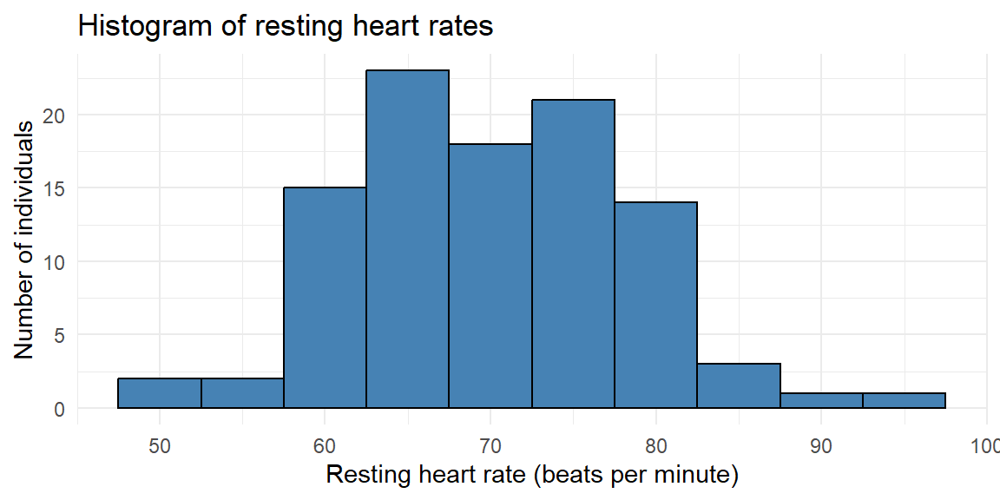
A logistics company records the delivery times (in minutes) for 75 packages delivered within a city on a given day. Delivery time is a continuous quantitative variable, so we again begin by constructing a frequency distribution.
31.5, 31.3, 27.3, 41, 46.5, 49.9, 38.1, 38.3, 50, 29.1, 28.8, 32.8, 31.8, 39, 40.7, 35.8, 47.4, 58.6, 28.8, 46.4, 37.5, 45.7, 42.3, 44.3, 51.8, 22.8, 44.5, 24.6, 41.9, 36.4, 40.7, 27.9, 52.6, 38.4, 39, 54.6, 47.5, 25.4, 52.7, 39.8, 42.5, 52.8, 34.4, 41.9, 40.1, 48.7, 54.8, 25.1, 37.5, 26.8, 61.9, 37.9, 41.3, 42.4, 52.2, 53.5, 60.7, 45.5, 42.7, 17.7, 43.6, 34.3, 43.9, 50.9, 47.6, 56.3, 21.9, 57.9, 61.5, 44.3, 39.4, 44, 49, 40, 39.2The minimum delivery time is 17.7 minutes and the maximum is 61.9 minutes, giving a range of \[ 61.9 - 17.7 = 44.2. \]
Suppose we choose 8 classes. The class width is \[ \frac{\text{range}}{8} = \frac{44.2}{8}, \] which we round up to 6 minutes. We start at 17 minutes and construct the intervals.
# A tibble: 8 × 2
class frequency
<fct> <int>
1 [17,23) 3
2 [23,29) 8
3 [29,35) 7
4 [35,41) 17
5 [41,47) 18
6 [47,53) 13
7 [53,59) 6
8 [59,65) 3Using this frequency distribution, we now draw the histogram.
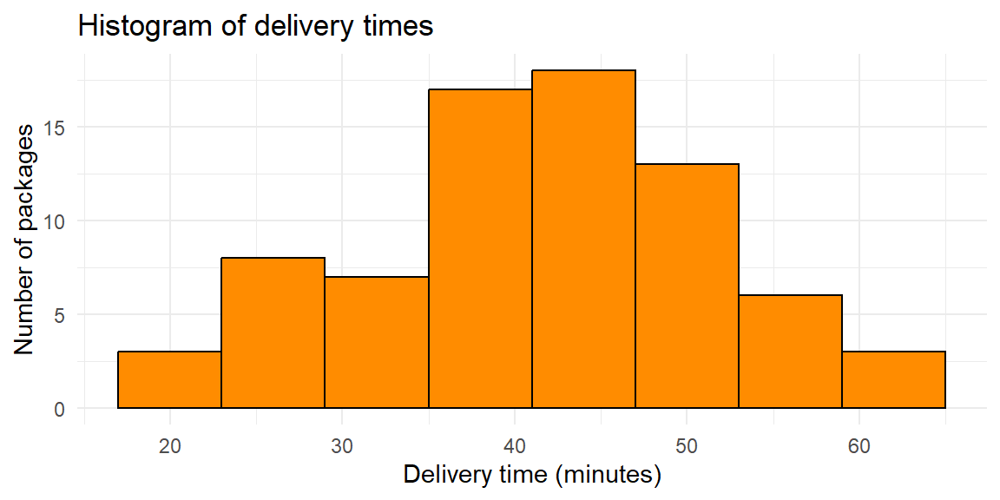
Histograms transform a frequency distribution into a visual summary that highlights the shape of the data. They help us see where observations cluster, how variable the data are, and whether unusual values are present. Because many statistical methods rely on assumptions about distributional shape, histograms play a central role in both exploratory analysis and model checking.
When constructing a histogram, the choice of the number of classes (bins) requires care. Too few classes oversmooth the data, hiding important features such as skewness, gaps, or multiple peaks. In contrast, too many classes make the histogram appear jagged and noisy, emphasizing random variation rather than meaningful structure. A well-chosen number of classes balances detail with clarity, revealing the overall shape of the distribution without distracting from its main features.
From Example 3.10, suppose we chose 40 classes instead of 8. The resulting histogram would look like:
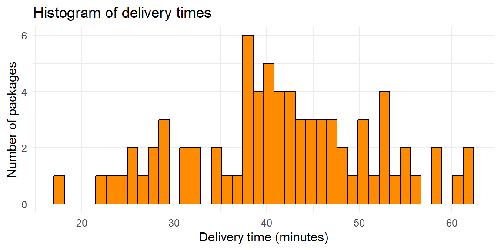
From this histogram, we cannot determine much about the structure due to the jagged shape from too many bars.
Suppose we chose 4 classes instead:
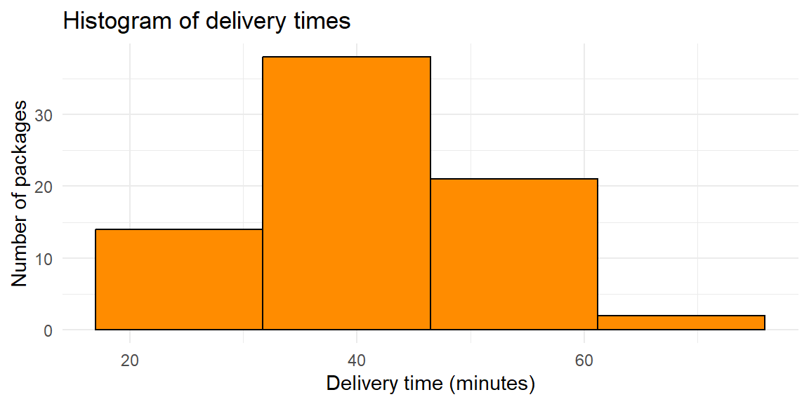
Here, some of the features of the data is lost since the bars span too large of a class interval. We may want to know more on how the values are distributed in these large intervals. Fortunately, most software like JMP do a good job in finding a right balance in determining the number of classes.
A stem-and-leaf plot is a simple display for quantitative data that preserves the original numerical values while providing a visual summary of the distribution. Each observation is split into two parts: a stem, consisting of the leading digit(s), and a leaf, consisting of the final digit. The stems are listed in increasing order in a column, and the leaves corresponding to each stem are written to the right.
Because stem-and-leaf plots retain every data value, they allow you to see the shape, center, and spread of the distribution and recover the original dataset if needed. This makes them especially useful for small to moderate sample sizes (typically fewer than about 100 observations), where displaying individual values is still manageable.
Unlike histograms, which group data into intervals and sacrifice some detail, stem-and-leaf plots show exactly where each observation falls. At the same time, the ordered stems and leaves create a visual structure that reveals clustering, gaps, skewness, and extreme values.
Suppose an orthopedic clinic records the time (in days) for 20 patients to regain full range of motion after knee surgery. We can construct a stem-and-leaf plot as follows:
The decimal point is 1 digit(s) to the right of the |
0 | 88899
1 | 000002224
1 | 5578
2 | 14In a hand-drawn stem-and-leaf plot, the stems would represent the tens of days (e.g., 1, 2, 3), and the leaves would represent the ones digit. Many statistical software packages split each stem into two rows, one for leaves 0–4 and another for leaves 5–9, to make patterns easier to see.
From the plot, it is easy to see where most recovery times cluster and to identify unusually long recovery periods. Because the stems are ordered, the plot also highlights the overall shape of the distribution and any extreme values.
Suppose an instructor records the quiz scores (out of 100) for 80 students in an algebra course.
The decimal point is 1 digit(s) to the right of the |
5 | 4
5 | 9
6 | 11234
6 | 5556799
7 | 0001223344
7 | 55566666666667788888999
8 | 000111222233334
8 | 555777789
9 | 00122
9 | 5689Here, the stems represent the tens digit of the score (5, 6, 7, 8, 9), and the leaves represent the ones digit. The stem-and-leaf plot shows that most scores fall in the 70s and 80s, with a few higher scores in the 90s and possibly some lower scores in the 50s.
Stem-and-leaf plots are ideal when:
For larger datasets, stem-and-leaf plots become cluttered, and histograms or dotplots are usually more effective. However, for exploratory analysis of modest-sized samples, stem-and-leaf plots provide a powerful blend of detail and visualization.
A dotplot is a simple graphical display for quantitative data in which each observation is represented by a dot placed above a number line. When multiple observations have the same value, the dots are stacked vertically. This stacking makes frequencies visible while still preserving the individual data points.
Dotplots are especially useful for small to moderate datasets, where displaying every observation is feasible and desirable. Unlike histograms, which group values into bins, dotplots show the exact values observed. This makes it easy to identify clusters, gaps, and outliers, as well as to see the overall shape of the distribution.
Because dotplots work directly with individual values, they are flexible enough to handle both discrete variables (such as counts) and continuous variables (especially when the data are rounded). They are also quick to construct and intuitive to read, making them a popular choice for exploratory analysis and classroom demonstrations.
Continuing the dental theme, suppose researchers record the number of clinic visits per patient during a year for 25 orthodontic patients. The variable of interest—the number of visits—is a discrete quantitative variable.
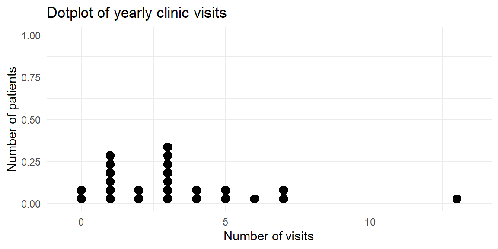
The dotplot shows that most patients had between one and three visits, while a few had no visits or as many as 13 visits. Because each dot represents a patient, the plot makes it easy to see both the concentration of values and the less common outcomes.
Suppose a workplace survey records the number of cups of coffee consumed per day by 30 employees.
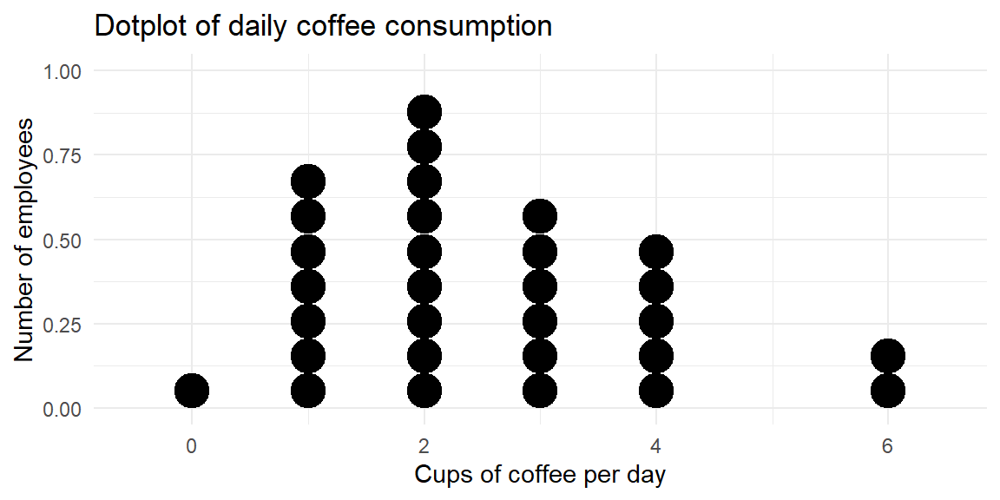
This dotplot reveals that most employees drink one to three cups per day, with a smaller number drinking four or more cups and a one employee drinking none at all. The stacked dots make it easy to compare frequencies while still seeing each individual’s value.
Dotplots are an excellent choice when:
As datasets grow larger, dotplots can become cluttered and difficult to read. In those cases, histograms provide a more effective summary. For small to moderate datasets, however, dotplots strike a valuable balance between numerical precision and visual insight.
In JMP:
| Keyword | Definition |
|---|---|
| Histogram | A graph of adjacent rectangles representing classes of a quantitative variable; the horizontal axis is numeric and the bars touch. |
| Relative frequency histogram | A histogram in which the height of each bar shows the relative frequency (proportion) in that class, so the sum of the bar heights equals 1. |
| Stem‑and‑leaf plot | A display that splits each data value into a stem (leading digits) and a leaf (trailing digit), preserving the original data. |
| Dotplot | A plot that places a dot above each data value on a number line, with stacked dots representing repeated values. |
Explain why a histogram is drawn with adjacent bars touching. How does this design reinforce the type of variable being plotted?
For a set of 15 recovery times (in days) after a dental procedure, would you prefer a histogram, a stem‑and‑leaf plot, or a dotplot? Justify your choice.
In a stem‑and‑leaf plot, what do the stems and leaves represent? Why might you choose to split the stems into two rows for certain datasets?
Why bars touch. The bars in a histogram are adjacent because the underlying variable is continuous, and there are no gaps between the classes. Drawing the bars together emphasizes that each class covers an interval on the number line; a gap would incorrectly suggest a break between values.
Choosing a plot for 15 observations. For a sample of 15 recovery times, a stem‑and‑leaf plot or dotplot would preserve the individual values and make it easy to see exact times. A histogram could also work, but with so few observations its appearance would depend heavily on the chosen bin width. Stem‑and‑leaf plots are especially useful here because they reveal the shape and extremes while retaining the data.
Interpreting stems and leaves. In a stem‑and‑leaf plot, the stem contains the leading digits of each number and the leaf is the final digit. Splitting stems into two rows—one for leaves 0–4 and one for leaves 5–9—provides more detail and smooths out long runs of leaves, making the distribution easier to read.